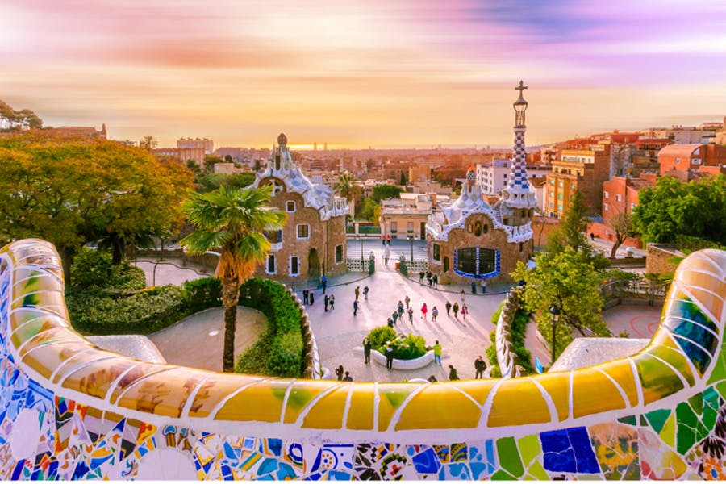
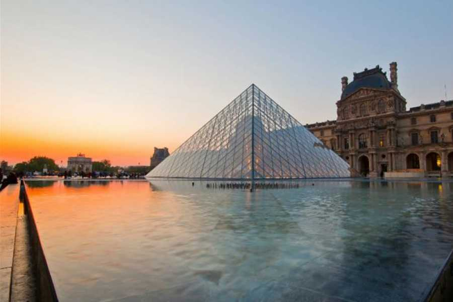
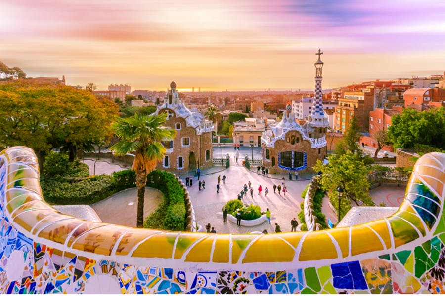
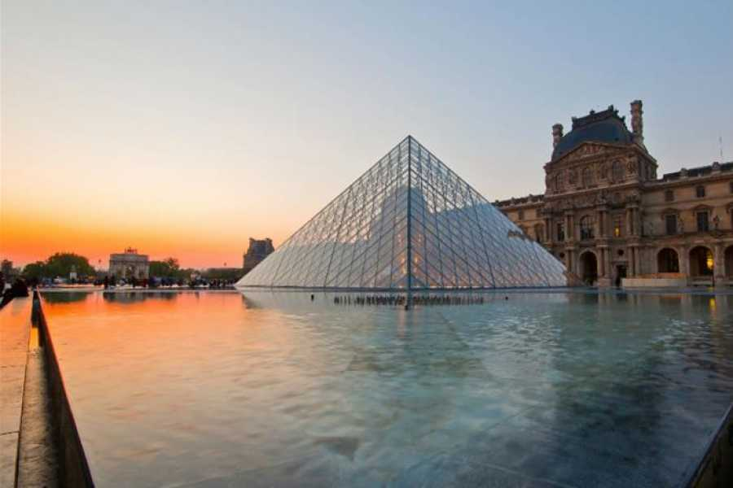

Above we have our most voted for popular destinations within Europe. All just a short distance from eachother and all using efficient if not sustainable means to travel there. Check them out and see if these could be on the list for your next trip?
Coming in at No. 10, we have Rome. Notoriously already a popular city however this came in at number 10 not only for it's historical architecture but also for it's eco-friendly values. In particular for it's Zeromission event which is dedicated to promoting renewable energies in the Mediterranean area.
Number 9 is Germany, being listed not only from it's stunning architectural views but for it being a notorious Nature Haven for visitors too. From the Berlin Wall to a more countryside based retreat in their Ultimate Fairytale Castle.
Both 7 & 8 are notorious for being the new cities of romance, with Seville sparking the views and Lisbon providing the architectural feels. Both equally easy to get to from London, with a short plane ride or Eurostar train away.
Not forgetting the Beautiful Belgium at a strong number 6, sustainability is a key factor for them. Take a walking tour of the city or discover the endless farming possibilities on one of their rooftop farms (yes, I did say rooftop).
Treat yourself to a new way of life in Amsterdam where you can cycle to your hearts content. Everything you need in the city centre is a short walk away if not a short tram ride away. Sustainable, yes - peaceful? Doubly yes.
Coming close at number 4, we have Madrid. Local, hot and easily one of our favourite cities thus far. Full of the new generation, green hotels, Madrid is making it's best efforts to give back to the world. Why not visit their infamous botanical garden or take a tour of the mountains on the Cable Car of Madrid?
 



Known infamously for it's historical culture, Marseille hits our list in 3rd place on our list for a number of different reasons. A 6-hour Eurostar ride from London, Marseille has one of the most sustainable means of travel for Londoners.
A popular spot in Marseille would be the The Calanques National Park which was created in May 2012. In it's short time of existence, The Calanques became Europe’s largest National Park which emcompasses the sea, land and peri-urban areas. Thanks to this classification the 5000 hectare massif benefits from added protection to Marseille. This is definitely on our list of things to explore there especially for it's fresh air and breathtaking views. The level of scenery contained within this beautiful place is eyecatching for visitors who love hikes and landscapes. sightseeing and hikes which are all truly unique. A journey through the Calanques massif is a path of discovery through breathtaking landscapes, a coastline where urban life is never far away, but where the wild and secret coves alternate with nature trails that offer many wonderful walks.
If you don't quite fancy a coastal walk, take a trip into the city where you'll be spoilt for choice. The city of Marseille is rich in both food and culture so there's plenty to do witht things stemming from riding around the city on their newly installed bikes. The beautiful climate allows ourists to glide around the city whilst helping to protect the environment or if you fancy being driven about, hop on their eco-friendly ferry!